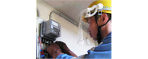

京都事業所は、昭和26年12月「関西計器工業㈱京都支社」として事業を開始しました。現在は、関西電力送配電㈱の各本部（京都、奈良、滋賀、大阪北、神戸、姫路）へ納入する低圧電力量計の検定代弁業務を行なっています。
また、計量法に定められた期間を迎える低圧電力量計については、工事拠点として京都工事所、伏見工事所、奈良工事所、滋賀工事所の4ヶ所を配置し、約45名の工事員により計器取替工事を実施しています。
地図はこちら
（1）検定代弁業務
計量法上必要な取引・証明用電力量計の日本電気計器検定所（JEMIC）への検定申請の代行業務（検定代弁）を行っています。
（2）電力量計取替工事
計量法の規定に基づき制定された計量法施行令により１０年に１回、お客さま宅に施設されている電力量計を、検定を受けた正確な計器に取替えています。また、現在の新しい計器は、データー通信が可能で多機能な「スマートメーター」を採用しています。
機械システムを活用した
ユニット式電力量計の出庫作業

ユニット式電力量計への取替作業
当事業所は、低圧電力量計の検定代弁、低圧お客さまの電力量計取替工事などの計器サービスについて、従業員約100名で対応しています。
事業所の所在は電車でお越しの場合はJR京都駅南側からタクシーで約10分、車でお越しの場合は名神高速京都南ICを出て１号線を北側へ走り約５分程度です。
一度、工場見学なども兼ねて「おいでやす 京都」へ！
京都事業所長